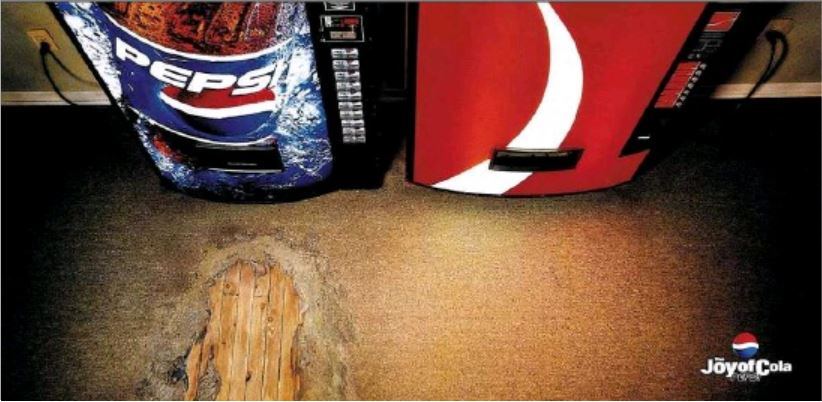

1. 이성적 소구의 유형
이성적 소구(rational appeals)는 소비자에게 이성적, 합리적 판단의 근거(예:품질, 성능, 경제성(가격), 편리성 등)를 객관적으로 광고에 제시함으로써,그러한 점에 경쟁력을 가진 자사제품을 선택하게 하는 것이다. 제품 속성을 전달한다는 점에서 '정보광고'(information ad)의 성격이 강하다.
-경쟁제품 대비 객관적 차별화가 용이한 경우, 많은 정보를 필요로 하는 고관여 제품에 많이 사용한다.
- 비교광고 비교 광고란 자사와 경쟁 브랜드를 직접적으로 혹은 간접적으로 거명하고, 몇 개의 주요 제품 속성과 비교하면서 차이를 보여주는 광고이다.
- 증언광고 증언 광고는 일반인 또는 유명인을 모델로 등장시켜 제품의 장점을 언급한는 것이다.
- 직접적 표현 광고(실연, demonstration) 제품이 지닌 특장점을 있는 그대로 표현 또는 부각시켜 전달하는 것이다. 즉 소비자에게 제품 사용을 통해 얻는 혜택을 사실적으로 묘사한다.
- 문제해결형 표현 광고(생활단편형 표현) 직접적 표현 광고와 유사하다. 다만 문제해결형 표현 광고는 제품의 사용 상황과 맥락을 함께 보여준다는 특징이 있다.
- 설명형 표현 광고 이 방법은 광고 컨셉을 이야기하듯이 표현하는 것이다.

일상생활에서의 '구전효과'를 광고에서 응용한 것이다.

예를 들어 장까지 살아가는 유산균을 실연으로 보여주기는 어렵다. 따라서 이를 인체 모형, 만화, 상징물 등을 동원하여 약효를 이야기하듯이 설명한다.
2. 감성적 소구의 유형
감성적 소구(emotinal appeals)는 사람들이 광고를 보면서 어떠한 감성을 느끼게 함으로써 소비자의 인식, 태도 및 행동에 영향을 미치는 것이다.제품 사용과 연계되는 감정을 광고 속에 표현하고 사람의 마음또는 감정에 변화를 일으키기 위한 목적이 있기에 '감정유발광고'(transformational ad)의 성격이 강하다.
-저관여 제품, 이미지(상징적)가 중요한 제품, 성숙기/쇠퇴기에 접어든 제품 등에서 효과적이다.
- 온정적 감성 소구 광고를 통해 사랑, 가족, 우정을 느끼게 함으로써 광고 제품(브랜드)에 대해서도 긍정적이고 온화한 감정을 불러일으킨다.
- 유머 소구 유머는 커뮤니케이션의 강력한 도구이다. 유머는 익살스러운 농담, 해학이란 뜻으로 남을 웃게 하는 말과 행동을 의미한다.
- 공포 소구 공포 소구는 어떤 행동의 위험성에 대한 위협적 메시지를 전달함으로써 소비자의 감정적 긴장을 유발시킨다.
- 성적 소구 성적 소구란 인간의 근본 욕구인 성에 대한 관심을 상품에 연관시키는 것이다. 소비자 주의 및 관심을 유발하고 광고의 기억가능성을 향상시킨다는 장점이 있다.
- 향수 소구 향수 소구형은 과거, 옛날, 어린 시절 등에 대한 그리움을 통해 감성을 자극하는 광고이다.
어색한 분위기를 깨고 부드럽고 즐거운 분위기를 만들어 주기에 커뮤니케이션의 효과를 높인다.

이를 통해 광고에서 제시하는 문제해결 방안을 수용하게끔 만든다.
공포 메시지가 비교적 적합한 영역에는 공익광고(예:흡연, 마약, 음주운전, 공해, 건강검진, 백신접종), 제품광고(예:약품, 건강식품, 위생제품), 교육 및 보험 등이 있다.
그러나 때로 성적 소구의 광고는 사회적 반감을 불러일으킬 뿐 아니라 과도한 성적 표현은 소비자들에게 브랜드나 광고에 대한 부정적 영향을 끼치기도 한다.
제품 컨셉과 성적 소구의 표현이 얼마나 조화로운지에 달려있다.
뉴트로(newtro): 새로움(new)과 복고(retro)를 합친 신조어로 복고를 새롭게 즐기는 경향을 의미한다.